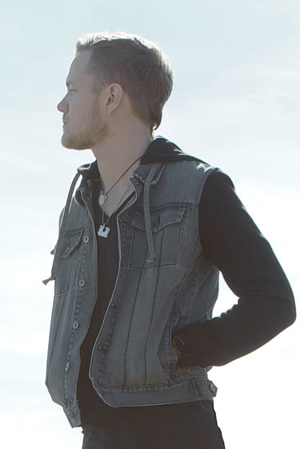
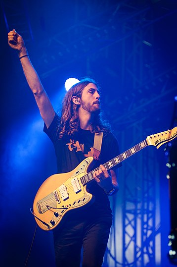
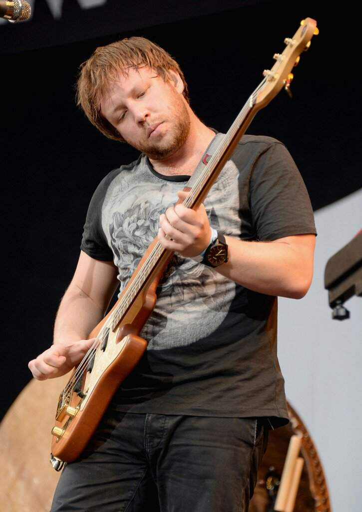
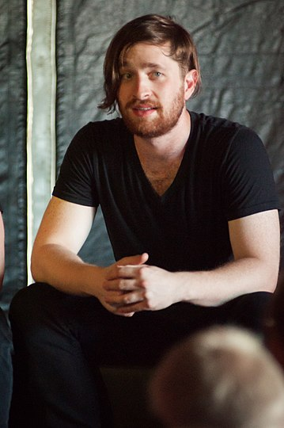

Ден Рейнольдс

Деніель Колтер «Ден» Рейнольдс
— американський музикант, автор пісень,
мультиінструменталіст і музичний продюсер;
фронтмен та засновник рок-гурту
«Imagine Dragons».
Рейнольд у юності не надто хотів стати музикантом; частково тому, що його майбутній колега по гурту Вейн Сермон одного разу сказав йому: «Не займайся музикою тільки тому, що тобі так хочеться — займайся музикою якщо ти мусиш це робити». Після того, як Ден почав навчатись в університеті Брігама Янга, він зрозумів, що не може «робити щось інше» та повністю зосередився на кар'єрі музиканта. Там же Рейнольдс зустрів ударника Ендрю Толмана, і разом вони утворили гурт «Imagine Dragons». Із Деном як вокалістом гурт переміг в декількох локальних музичних змаганнях. Басист Бен МакКі приєднався до гурту у Лас-Вегасі після того, як гурт покинув Толман у 2011 році, запросивши Дена Платцмана грати на ударних, сформувавши таким чином нинішній склад «Imagine Dragons». Перший «прорив» для гурту трапився у 2010 році, коли захворів фронтмен гурту «Train», і «Imagine Dragons» були запрошені замінити їх на фестивалі «Bite of Las Vegas» перед більш ніж 26-тисячним натовпом. У листопаді 2011 року гурт підписав контракт із лейблом «Interscope Records» та розпочав співпрацю із продюсером Alex da Kid.
Вейн Деніел Сермон
Вейн Деніел Сермон — гітарист, бек-вокаліст та автор пісень рок-гурту «Imagine Dragons»
Деніел Платцман народнився 28 вересня 1986 року в Атланті, США. Він закінчив Музичний коледж Берклі, де здобув диплом з озвучування фільмів. В Берклі, Платцман грав у Berklee Concert Jazz Orchestra, джазовому оркестрі Urban Outreach та Berklee Rainbow Big Band, а також отримав премію за видатне музичне мистецтво та нагороду Майкла Рендіша за озвучування фільмів. Він також грав на гітарі з учасниками групи Imagine Dragons Вейном Сермоном та Беном Маккі.
Деніел є гітаристом і бек-вокалістом американського гурту Imagine Dragons, саме тут він став відомим за своїм другим ім'ям, адже також у гурті ще вокаліста і барабанщика звуть Деніел, і, з огляду на плутанину, Сермона стали іменувати Вейном. Деніел Вейн вступив до гурту на запрошення друга Дена 2009 року. Прізвисько "Крило" йому дали друзі, коли одного разу на концерті менеджер покликав його на ім'я (Wayne), проте всім почулося "wing" (крило).
Деніелу дуже симпатизує золотий колір, через що більшість його гітар - золоті.

Бен Маккі

Деніель Колтер «Ден» Рейнольдс
— американський музикант, автор пісень,
мультиінструменталіст і музичний продюсер;
фронтмен та засновник рок-гурту
«Imagine Dragons».
Рейнольд у юності не надто хотів стати музикантом; частково тому, що його майбутній колега по гурту Вейн Сермон одного разу сказав йому: «Не займайся музикою тільки тому, що тобі так хочеться — займайся музикою якщо ти мусиш це робити». Після того, як Ден почав навчатись в університеті Брігама Янга, він зрозумів, що не може «робити щось інше» та повністю зосередився на кар'єрі музиканта. Там же Рейнольдс зустрів ударника Ендрю Толмана, і разом вони утворили гурт «Imagine Dragons». Із Деном як вокалістом гурт переміг в декількох локальних музичних змаганнях. Басист Бен МакКі приєднався до гурту у Лас-Вегасі після того, як гурт покинув Толман у 2011 році, запросивши Дена Платцмана грати на ударних, сформувавши таким чином нинішній склад «Imagine Dragons». Перший «прорив» для гурту трапився у 2010 році, коли захворів фронтмен гурту «Train», і «Imagine Dragons» були запрошені замінити їх на фестивалі «Bite of Las Vegas» перед більш ніж 26-тисячним натовпом. У листопаді 2011 року гурт підписав контракт із лейблом «Interscope Records» та розпочав співпрацю із продюсером Alex da Kid.
Вейн Деніел Сермон
Деніел Джеймс Платцман — ударник і бек-вокаліст інді-рок гурту Imagine Dragons.
Під час навчання в Берклі Ден Платцман грав у трьох джазових оркестрах і брав участь у престижному джазовому фестивалі Betty Carter Jazz Ahead. Деніел Платцман приєднався до Imagine Dragons найпізніше, хоча був знайомий з Вейном Сермоном і Беном Маккі ще до того, як вони перебралися до Лас-Вегаса і присвятили себе групі. Коли 2011 року ударник Imagine Dragons Ендрю Толман покинув колектив, Вейн Сермон покликав на це місце Дена. З ним вони і записали свій перший альбом, який отримав премію Греммі та безліч інших нагород.
У 2011 році Вейн Сермон запросив Платцмана грати в групі. Деніел, жертвуючи своїм останнім роком навчання в Берклі, вступає в групу. У цей час гурт набирає популярність і отримує низку місцевих нагород, як-от "Найкращий CD 2011 року" (Vegas SEVEN), "Найкращий місцевий інді-гурт 2010" (Las Vegas Weekly), "Newest Must See Live Act" (Las Vegas CityLife). У листопаді 2011 року гурт підписує контракт з Interscope Records і починає працювати з продюсером Алекс де Кідом.
